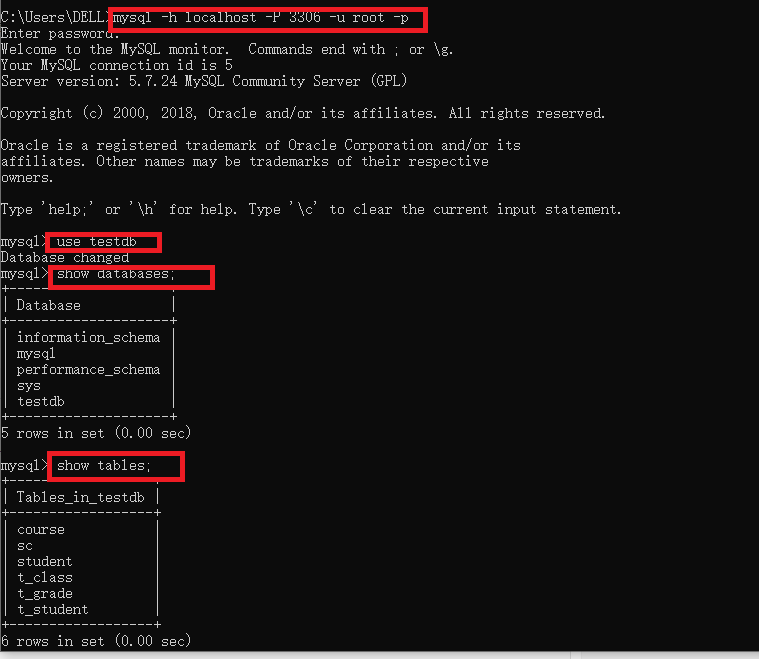
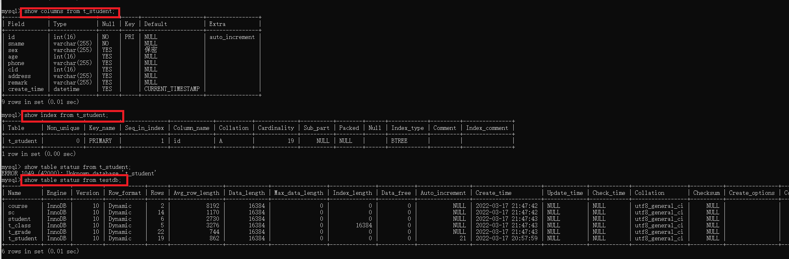
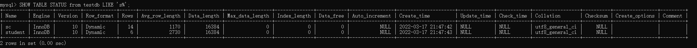
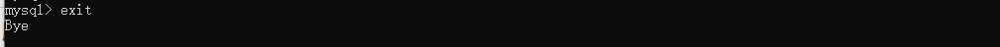

MySQL是最流行的关系型数据库管理系统（RDMS Relational Database Management System），是开源的，目前属于Oracle旗下产品。
数据库
数据库(Database)是按照数据结构来组织，存储和管理数据的仓库。
表（Table）是数据的矩阵，在一个数据库中的表看起来像一个简单的Excel表格。
主键（Primary key）主键是唯一的，一个数据表中只能包含一个主键，可以使用主键来查询数据。
安装
在Windows上安装MySQL
下载安装包
将安装包解压到本地文件夹
把MySQL里面的bin目录配置到环境变量中
检查环境变量是否配置成功
打开cmd，输入mysql -V，出现MySQL的版本信息
通过命令安装数据库的服务
使用管理员身份打开cmd
1
2
3mysql -install -- 安装数据库的服务
mysqld --initialize-insecure -- 对数据库进行初始化
net start mysql -- 启动数据库
连接数据库
1 | mysql -h IP地址 -u 用户名 -p |
按回车确认, 如果安装正确且 MySQL 正在运行, 会得到以下响应:
1 | Enter password: |
若密码存在, 输入密码登录, 不存在则直接按回车登录。登录成功后你将会看到 Welcome to the MySQL monitor… 的提示语。
然后命令提示符会一直以 mysql> 加一个闪烁的光标等待命令的输入, 输入 exit 或 quit 退出登录。
选择要操作的Mysql数据库，使用该命令后所有Mysql命令都只针对该数据库. 注意：命令要以英文“;”结尾。
1
2
3
4
5
6
7
8
9
10
11mysql> use RUNOOB;
Database changed
mysql> show databases;
mysql> show tables;
mysql> SHOW COLUMNS FROM runoob_tbl;-- 显示数据表的属性，属性类型，主键信息 ，是否为 NULL，默认值等其他信息。
mysql> SHOW INDEX FROM runoob_tbl; -- 显示数据表的详细索引信息，包括PRIMARY KEY（主键）。
mysql> SHOW TABLE STATUS FROM RUNOOB; # 显示数据库 RUNOOB 中所有表的信息
mysql> SHOW TABLE STATUS from RUNOOB LIKE 'runoob%'; # 表名以runoob开头的表的信息
mysql> SHOW TABLE STATUS from RUNOOB LIKE 'runoob%'\G; # 加上 \G，查询结果按列打印
mysql> exit // -- 退出 mysql> 命令提示窗口可以使用 exit 命令，
Bye




数据库的管理
查看数据库
1
show databases;
新建数据库
1
2create database 数据库的名字;
create database 数据库的名字 default charset 字符集; -- （字符集，UTF8，UTF8mb4多一些生僻字）修改数据库
1
create database 数据库的名字 default charset 字符集; -- 数据库的名字不能修改，可以改字符集
删除数据库
1
drop database 数据库的名字;
选择数据库 use 数据库名
1
use 数据库的名字;
命名规则
- 库，表，字段全部采用小写，不要使用驼峰式命名
- 避免用保留字，例如index，desc等
- 只能使用英文字母，数字，下划线，并以英文字母开头。
表的管理
查看表
1
show tables;
新建表
1
create table 表名(字段属性1，字段属性2);
删除表
1
drop table 表名;
修改表
1
2
3
4
5alter table 表名; -- 修改表名
alter table 表名 add 字段名，字段属性; -- 新增字段
alter table 表名 drop 字段名; -- 删除字段名
alter table 表名 modify 字段名 字段属性; -- 修改字段属性
alter table 表名 change 老字段名 新字段名; -- 修改字段名
数据库的操作
增
1
insert into 表名(字段1,字段2)values(值1,值2);
删
1
2delete from 表名;
delete from 表名 where 查询条件改
1
2update 表名 set 字段1=值,字段2=值;
update 表名 set 字段1=值,字段2=值 where 查询条件;查
1
2
3select * from 表名
select 字段1,字段2 from 表名
select * from where 查询条件1 and 查询条件2多表联查
- 根据表的关系把两张表或者更多的表，结合起来一起查询
1
2select * from 表1 join 表2 on 表的关系;
select * from 表1 join 表2 on 表的关系 where 查询条件 and 查询条件2;- 关联的类型
- 内关联 join=inner join
- 外关联
- 左关联 left join
- 右关联 right join
嵌套查询
1
select * from (select语句)表名;
统计-聚合函数
- count（）计数，count对单独的字段进行计数的时候，胡忽略掉Null，所以为了避免这种情况，一般我们都不会对某个单独的字段计数，除非是有这个要求，一般我们都用count（*）
- sum（）求和
- avg（）平均值，在平均值计算的时候，不会计算Null的行
- min（）最小值
- max（）最大值
分组
如果分了组，那么在select后面就只能写聚合函数，不能写单独的字段，不过，分组用的这个字段可以写
1
2select Count（*）,avg(数值字段) from 表名
Group by 字段名;别名，取外号的意思
字段别名
1
select 字段 as A from 表名; -- 因为mysql语言运行的顺序，Where后不可以用字段的别名，表的别名可以用
表别名
1
select * from 表名 A; -- A为别名
排序
1
2select * form 表名 where 查询条件
order by 字段名 ASC/DESC; -- ASC为正向排序，DESC为倒叙，注意默认就是正向排序限制查询显示的数量
1
2select * from 表名 A
limit x,y -- X的作用是从第几条开始显示，y的作用是一共显示几条，Limit y，这种是x默认为0去重
1
select distinct 字段名 from 表名 A
case语句
条件判断语句
根据字段的不同情况显示不同的内容
1
2
3
4
5select
case
when 条件 then 结果
end,
字段名 * from 表名复制表
1
2
3create table 表名（select 语句）;-- 作用就是把select语句出来的虚拟表存到这个新创建的表里
create temporary table 表名(select语句);-- 临时表 在数据库列表是是看不到的
insert into 表1(字段名)select 语句; -- 字段名需要对应上,这里是批量将select出来的数据加入到表1
语法
- 数据类型
| 数据类型 | 含义 |
|---|---|
| char(n),character(n) | 长度为n的定长字符串 |
| varchar(n),charactervarying(n) | 最大长度为n的变长字符串 |
| float（n） | 可选精度的浮点数 |
| date | 日期，包括年，月，日，格式为（YYYY-MM-DD） |
| Time | 时间，包括一日的时，分，秒，格式为HH:MM:SS |
| int,integer | 长整型（4字节） |
| smallint | 短整型（2字节） |
| bigint | 大整数（8字节） |
数值判断
=，!=, > , >=, <, <=
is
判断是不是空
1
2xx is null
xx is not null
like 语法
- LIKE 通常与 % 一同使用，“张%”，“%美丽”，“%美%”
1 | SELECT field1, field2,...fieldN |
in 语法-支持数字，字符串，等类型
判断在不在列表中
1 | WHERE column IN (1,2,...) |
in子查询
1 | SELECT * FROM article WHERE uid IN(SELECT uid FROM user WHERE status=0) |
order by
使用 ASC（升序） 或 DESC （降序）关键字来设置查询结果，默认情况下，它是按升排列。
1 | SELECT field1, field2,...fieldN table_name1, table_name2... |
**between X and Y **
判断某个值是否在某个区间（闭区间）
1 | xx between 1 and 10; |
sql的逻辑连接词
and 并且，or 或者，and not 并且不，or not 或者不
sql语句的结构顺序
select-> from->join..on..->where..->group by..->having..->oreder by..->limit
sql语句的运行顺序
from->join..on..->where..->group by..->as->having->select->distinct->oreder by->limit.
Having和Where
where与having都是用来筛选的
where在分组之前应用，having分组之后应用
当一个查询包含了where条件和聚合函数，先执行条件过滤，再进行聚合函数，如：1
SELECT SUM(score) FROM sc WHERE score > 60 //先过滤出score>60的记录，再进行SUM求和
having在聚合之后进行过滤，having在分组的时候会用，对分组结果进行过滤，通常分组里面包含聚合函数，如：
1
SELECT sid,AVG(score) FROM sc GROUP BY sid HAVING AVG(score) >60
如果having中包含多个条件，这些条件将通过AND、OR或NOT连接在一起，如：
1
SELECT sid,cid,AVG(score) FROM sc GROUP BY sid HAVING AVG(score) >60 AND cid != '001' ;
表的类型
真实表
虚拟表
临时表
临时表的用法和真实表的用法一模一样
临时表是看不到的，但是你知道表名还是可以正常的操作
如果断开了数据库的连接，临时表会自动销毁
1
create temporary table 表名();
事务
1
2
3
4
begin; -- 开始事务
commit; -- 提交事务
rollback; -- 回滚事务
source sql文件; -- 运行sql文件
Navicat
Navicate是一个操作数据库的工具
连接
IP地址：数据库所在地址的IP
端口：数据库的端口号，默认3306
账号：数据库的账号，默认账号是root
密码：数据库账号对应的密码，刚安装好默认是没有密码的。
事务
通过事务主管数据库的功能就可以避免我们在操作【数据】的时候失误
回滚事务：回滚不是回滚一步，是回滚到开始事务之前的一个状态
提交事务：确认操作无误，就可以提交事务了，提交后就不能回滚了
备份
保存为sql文件（结构，结构和数据）
运行sql文件，就可以还原之前的备份。
设置密码
设置密码 root@localhost 是指root这个账号只能在localhost这个IP下登录，这里的IP是相对于数据库所在的服务器的IP而言的
root@% 是指这个root账号可以在任何IP下来登录